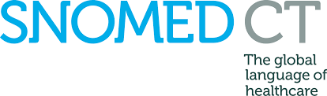
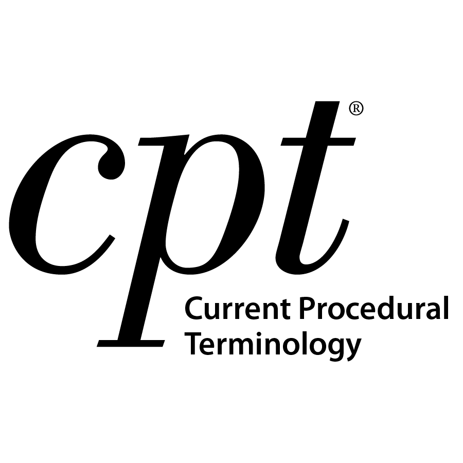
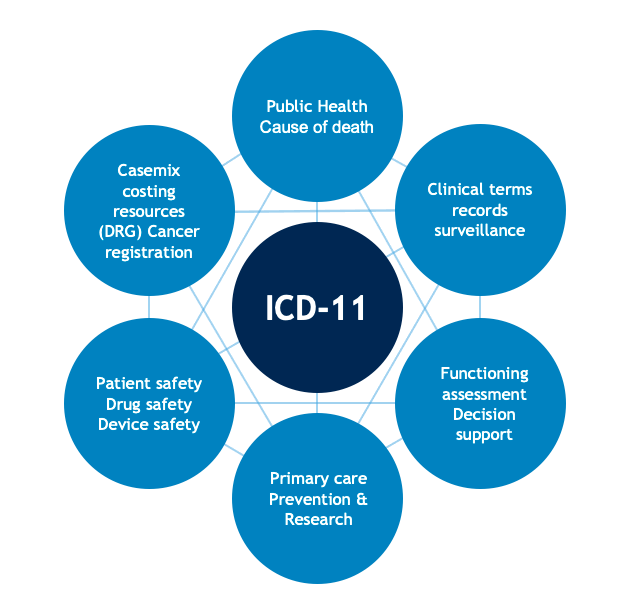

Mapping to Other Standards
LOINC codes can be mapped to other healthcare terminologies, such as SNOMED-CT and ICD-10, which can improve interoperability and data exchange between different healthcare systems.
The LOINC standard is widely used and recognized in the healthcare industry, and it is closely connected to several other standards that are used to exchange health information electronically. Some of the key relationships between LOINC and other standards include:
- HL7: LOINC is an essential part of the Health Level Seven (HL7) International messaging and document standards, which are widely used for electronic health record (EHR) communication.
- SNOMED CT: LOINC and the Systematized Nomenclature of Medicine--Clinical Terms (SNOMED CT) are both maintained by the International Health Terminology Standards Development Organisation (IHTSDO), and they are designed to complement each other. 
- NCI: The National Cancer Institute (NCI) uses LOINC codes to represent laboratory and clinical observations in its cancer research projects.
- CPT: The Current Procedural Terminology (CPT) codes developed by the American Medical Association (AMA) complement LOINC codes by describing medical procedures and services. 
- ICD: The International Classification of Diseases (ICD) codes developed by the World Health Organization (WHO) are used to classify and code diagnoses, and they work in tandem with LOINC codes to represent observations and measurements. 
LOINC codes are also included in many other healthcare-related standards and initiatives, including those related to clinical quality measures, laboratory reporting, public health reporting, and medical imaging.
Effective communication and exchange of health information depend on the use of standardized codes and terminologies, and LOINC plays a critical role in this process. The standard's close relationships with other key standards and its widespread adoption in the healthcare industry make it an essential component of modern healthcare information systems.